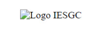

TEMA 3
IMÁGENES
EJERCICIO 1
Diferencias entre "Litle" y "Alt"
Title es un atributo que sirve para poner título a imagenes y videos.
alt es un atributo que se incluye dentro de elementos html como img y se utiliza para aportar información sobre el elemento, en el caso de que este falle.
EJERCICIO 2
Diferencias entre "Map" y "Area"
"Map" se utiliza para mapear una imagen, pudiendo incluir en ella infomación adicional como enlaces por ejemplo.
"Area" define una sección en un mapa de imágenes.
EJERCICIO 3

EJERCICIO 5
Completa el documento y crea en el logo un enlace a la página del IES Gran Capitán.
EJERCICIO 8
Utiliza la imagen adjunta del sistema solar para crear una página con una imagen con enlaces a los diferentes elementos (planetas, lunas,...) que aparecen en la misma.